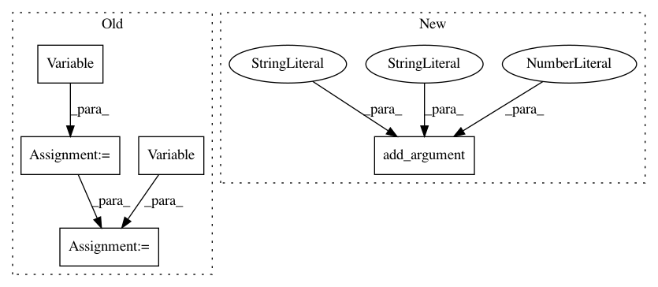

61421e8d341312e02dff23b46acde4261808dab3,train.py,,,#,15
Before Change
train_batch[key] = train_batch[key].cuda()
// forward pass to encoder
img = Variable(train_batch["img_feat"])
ques = Variable(train_batch["ques_fwd"])
hist = Variable(train_batch["hist"])
enc_out = encoder(img, ques, hist)
// forward pass to decoder
options = Variable(train_batch["opt"])
ans_ind = Variable(train_batch["ans_ind"])
After Change
parser.add_argument("-num_epochs", default=20, type=int, help="Epochs")
parser.add_argument("-batch_size", default=4, type=int, help="Batch size")
parser.add_argument("-lr", default=1e-3, type=float, help="Learning rate")
parser.add_argument("-lr_decay_rate", default=0.9997592083, type=float, help="Decay for lr")
parser.add_argument("-min_lr", default=5e-5, type=float, help="Minimum learning rate")
parser.add_argument("-weight_init", default="xavier", choices=["xavier", "kaiming"],
help="Weight initialization strategy")
parser.add_argument("-gpuid", default=0, type=int, help="GPU id to use")
In pattern: SUPERPATTERN
Frequency: 3
Non-data size: 5
Instances
Project Name: batra-mlp-lab/visdial-challenge-starter-pytorch
Commit Name: 61421e8d341312e02dff23b46acde4261808dab3
Time: 2018-07-06
Author: karandesai281196@gmail.com
File Name: train.py
Class Name:
Method Name:
Project Name: sony/nnabla-examples
Commit Name: 9dab8ae56ce90f1b9ba6808a6e0673ab6f13103e
Time: 2020-12-15
Author: Krishna.Wadhwani@sony.com
File Name: GANs/stylegan2/generate.py
Class Name:
Method Name: main
Project Name: sony/nnabla-examples
Commit Name: 7d8f3f66495979f1bbd27205d422d673991709f2
Time: 2021-01-26
Author: Krishna.Wadhwani@sony.com
File Name: GANs/stylegan2/generate.py
Class Name:
Method Name: main